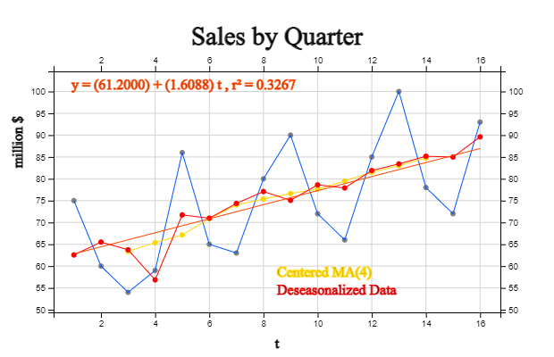
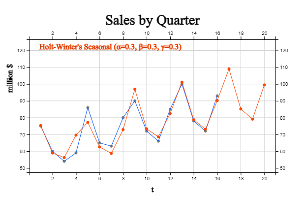

Chapter 13. Time Series Analysis
13.6 Seasonal Model and Forecasting
13.6.1 Seasonal Multiplicative Model
(Step 1) For the time series, find the \(L\)-point centered moving average. This moving average represents the trend component \(T_t\) after removing seasonal component and irregular component from the time series.
(Step 2) Divide the time series \(Y_t\) by the trend component \(T_t\) obtained in Step 1. This value implies the seasonal component and the irregular component \({S_t \cdot I_t}\), and is called the seasonal ratio.
$$ \frac{Y_t} {T_t } \;=\; S_t \cdot I_t $$ (Step 3) Calculate the trimmed average for each seasonal ratio obtained in Step 2. This is the seasonal index, but the normalization should be performed so that the sum of the seasonal indices is \(L\).
After obtaining the seasonal index as shown, dividing the original time series data by the seasonal index. The results is called a deseasonal time series.
\( \qquad \text{Deseasonal time series:} \qquad D_t \;=\; \frac{Y_t} {S_t } = T \cdot I \)
This deseasonal time series \(D_t\) implies \(T \cdot I\). An appropriate time series model is applied to this deseasonal data and predict the future vaules. Then multiply the corresponding seasonal index to obtain the final predicted value of the desired season.
[Table 13.6.1] shows a company's quarterly sales. Since the seasonal period is 4, the 4-point centered moving average is as shown in column 4 of the table. By dividing the original time series by a 4-point centered moving average, the seasonal ratio in column 5 can be calculated. $$ \frac{Y_t} {T_t } \;=\; S_t \cdot I_t $$
| ① Year Quarter |
② Sales |
③ 4-point MA |
④ Centered 4-point MA |
⑤ Seasonal Ratio |
⑥ Deseasonal Data \(D_t\) |
|
|---|---|---|---|---|---|---|
|
1 2 3 4 5 6 7 8 9 10 11 12 130 14 15 16 |
2018 Quarter 1 2018-Quarter 2 2018-Quarter 3 2018-Quarter 4 2019 Quarter 1 2019-Quarter 2 2019-Quarter 3 2019-Quarter 4 2020 Quarter 1 2020 Quarter 2 2020 Quarter 3 2020 Quarter 4 2021 Quarter 1 2021 Quarter 2 2021 Quarter 3 2021 Quarter 4 |
75 60 54 59 86 65 63 80 90 72 66 85 100 78 72 93 |
62.000 64.750 66.000 68.250 73.500 74.500 76.250 77.000 78.250 80.750 82.250 83.750 85.750 |
63.375 65.375 67.125 70.875 74.000 75.375 76.625 77.625 79.500 81.500 83.000 84.750 |
0.852 0.902 1.281 0.917 0.851 1.061 1.175 0.928 0.830 1.043 1.205 0.920 |
61.292 64.915 63.759 58.700 70.281 70.324 74.385 79.593 73.550 77.898 77.928 84.567 81.722 84.389 85.012 92.527 |
[Table 13.6.2] shows the seasonal ratio by year and quarter. If the maximum and minimum values are removed for each quarter and the average is obtained (trimmed average), it is the seasonal index in column 6. Since the sum of these values is 4.0197, the seasonal index in column is normalized as in column 7. $$ {\hat S}_1 \;=\; 1.1991,\quad {\hat S}_2 \;=\; 0.9159,\quad {\hat S}_3 \;=\; 0.8472,\quad {\hat S}_4 \;=\; 1.0378 $$
| ① Year Quarter |
② 2018 |
③ 2019 |
④ 2020 |
⑤ 2021 |
⑥ Trimmed Mean |
⑦ Seasonal Index \(s_t\) |
|---|---|---|---|---|---|---|
|
1st Quarter 2nd Quarter 3rd Quarter 4th Quarter |
0.852 0.902 |
1.281 0.917 0.851 1.061 |
1.175 0.928 0.830 1.043 |
1.205 0.920 |
1.2050 0.9204 0.8514 1.0429 |
1.1991 0.9159 0.8472 1.0378 |
| sum 4.0197 |
Column 6 of [Table 13.6.1] shows the non-seasonal data \(D_t\) obtained by dividing the original data by the seasonal index of each quarter. The linear regression line for this non-seasonal data is as follows (<Figure 13.6.1>)., $$ D_{t} \;=\; 61.2000 \;+\; 1.6088 \cdot t $$ Therefore, the forecast for the next one year is as follows. $$ \begin{align} & \text{Time 17 :} \quad{\hat Y}_{17} \;=\; (61.2000 \;+\; 1.6088 \times 17) \times 1.1991 \;=\; 108.354 \\ & \text{Time 18 :} \quad{\hat Y}_{18} \;=\; (61.2000 \;+\; 1.6088 \times 18) \times 0.9159 \;=\; 83.332 \\ & \text{Time 19 :} \quad{\hat Y}_{19} \;=\; (61.2000 \;+\; 1.6088 \times 19) \times 0.8472 \;=\; 77.721 \\ & \text{Time 20 :} \quad{\hat Y}_{20} \;=\; (61.2000 \;+\; 1.6088 \times 20) \times 1.0378 \;=\; 93.853 \\ \end{align} $$ <Figure 13.6.2> is a graph of seasonal forecasts.
|

<Figure 13.6.1> Forcasting Model of Deseasonal Sales of a Company
|

<Figure 13.6.2> Forcasting of Quarterly Sales of a Company
|
13.6.2 Holt-Winters Model
| Season 1 | Season 2 | \(\cdots\) | Season \(L\) | |
|---|---|---|---|---|
|
Cycle 1 Cycle 2 \(\cdots\) Cycle \(m\) |
\(Y_{1}\) \(Y_{L+1}\) \(\cdots\) \(Y_{(m-1)L+1}\) |
\(Y_{2}\) \(Y_{L+2}\) \(\cdots\) \(Y_{(m-1)L+2}\) |
\(\cdots\) \(\cdots\) \(\cdots\) \(\cdots\) |
\(Y_{L}\) \(Y_{2L}\) \(\cdots\) \(Y_{mL}\) |
The Holt-Winters model is an extension of Holt's linear double exponential smoothing method studied in the previous section to a seasonal model. It consists of a level component \(l_t\), a trend component \(b_t\), and a seasonal component \(s_t\). There are additive model and multiplicative model, but only the multiplication model is introduced here. $$ \begin{align} {\hat{Y}}_{t+h} &\;=\; (l_{t} \;+\; h \cdot b_{t} ) \cdot s_{t+h-m(k+1)} \\ l_{t} &\;=\; \alpha \frac{y_t}{s_{t-m} } + (1-\alpha)(l_{t-1} + b_{t-1} ) \\ b_{t} &\;=\; \beta (l_{t} - l_{t-1} )+(1- \beta ) b_{t-1} \\ s_{t} &\;=\; \gamma \;\; \frac{y_{t}}{l_{t-1} + b_{t-1}} \;+\; (1- \gamma ) s_{t-m} \end{align} $$ Here \(k\) is integer part of \((h-1)/m\). \(l_t\) is a time series level, which means the exponential smoothing of the current level (\( \frac{y_t}{s_{t-m} } \) ) with seasonality removed and the value predicted one time ago \((l_{t-1} + b_{t-1} ) \). \(b_t\) is the slope which is the exponential smoothing of the slope of the current time point \( (l_t - l_{t-1} )\) and the previous time point (\(b_{t-1}\)). \(s_t\) is a seasonal index which is the exponential smoothing of the current seasonal component (\(\frac {y_t}{l_{t-1} + b_{t-1} } \)) and the seasonal component of the previous season \(s_{t-m}\).
[Table 13.6.3] calculates exponential smoothing values of level, slope, and seasonal indices using the Holt-Winters model with α = 0.3, β = 0.3, γ = 0.3 to the quarterly sales of a company. The last column is one time prediction at time \(t-1\), \({\hat Y}_{(t-1)+1}\). The initial values \(l_0\) and \(b_0\) are the intercept and slope of the linear regression model for all data, and the initial values of the seasonal index are calculated by the model \(Y \;=\; T \times S \times I \).
| time | Year Quarter | Sales \(Y_t\) |
Level \(l_t\) |
Slope \(b_t\) |
Seasonal \(s_t\) |
One Time Forecast \(\hat Y _{(t-1)+1}\) |
|---|---|---|---|---|---|---|
|
-3 -2 -1 0 1 2 3 4 5 6 7 8 9 10 11 12 13 14 15 16 |
2018 Quarter 1 2018-Quarter 2 2018-Quarter 3 2018-Quarter 4 2019 Quarter 1 2019-Quarter 2 2019-Quarter 3 2019-Quarter 4 2020 Quarter 1 2020 Quarter 2 2020 Quarter 3 2020 Quarter 4 2021 Quarter 1 2021 Quarter 2 2021 Quarter 3 2021 Quarter 4 |
61.2 62.7312 64.6753 65.5795 63.9809 66.7081 68.7061 71.6766 75.7320 76.5997 78.2283 79.2477 81.6382 83.21580 84.7427 86.0501 88.4618 |
1.61 1.5863 1.6937 1.4568 0.5402 1.1963 1.4368 1.8969 2.5445 2.0414 1.9176 1.6481 1.8708 1.7829 1.7061 1.5865 1.8341 |
1.61 1.5863 1.6937 1.4568 0.5402 1.1963 1.4368 1.8969 2.5445 2.0414 1.9176 1.6481 1.8708 1.7829 1.7061 1.5865 1.8341 |
1.1991 0.9159 0.8472 1.0378 1.1976 0.9210 0.8371 0.9905 1.2382 0.9319 0.8555 1.0195 1.2117 0.9270 0.8459 1.0289 1.2074 0.9242 0.8420 1.0386 |
75.315 58.908 56.230 69.570 77.270 62.539 58.720 72.874 96.920 73.282 68.561 82.477 01.184 78.791 73.124 90.169 |
<Figure 13.6.3> is the Holt-Winters forecast for the next one year and is calculated as follows: $$ \begin{align} & \text{Time 17 :} \quad {\hat Y}_{16+1} \;=\;\; (l_{16} + 1 \times\;b_{16} ) \cdot s_{13} \;=\;(88.4618 + 1.8341)\times1.2074 \;=\;109.024 \\ & \text{Time 18 :} \quad {\hat Y}_{16+2} \;=\;\; (l_{16} + 2 \times\;b_{16} ) \cdot s_{14} \;=\;(88.4618+2 \times 1.8341) \times 0.9242\;=\;85.144 \\ & \text{Time 19 :} \quad {\hat Y}_{16+3} \;=\;\; (l_{16} + 3 \times\;b_{16} ) \cdot s_{15} \;=\;(88.4618+3 \times 1.8341) \times 0.9420\;=\;79.115 \\ & \text{Time 20 :} \quad {\hat Y}_{16+4} \;=\;\; (l_{16} + 4 \times\;b_{16} ) \cdot s_{16} \;=\;(88.4618+4 \times 1.8341) \times 1.0386\;=\;99.495 \\ \end{align} $$
|

<Figure 13.6.3> Holt-Winters Forecasting of Quarterly Sales
|